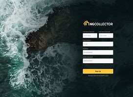
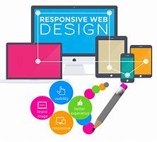

Developed a full-stack web application under pressure at a local hackathon. Utilized HTML, CSS, and JavaScript to build a functional prototype, demonstrating strong teamwork and problem-solving skills.
Designed and built a responsive personal portfolio website from scratch using HTML, CSS, and JavaScript. The site showcases my work, skills, and experience in a clean and modern design.
Created a conceptual design for a user-friendly e-commerce website. Focused on creating a clean and intuitive user interface to provide a seamless shopping experience.
Built a back-end application using Python at a hackathon. This project demonstrates my logical problem-solving abilities and my skills in Python programming.

Designed and built a stylish and effective landing page for a fictional business. The project highlights my skills in visual design and creating clear calls-to-action.

Recreated the front-end of a major company's website to refine my front-end development skills. This project demonstrates my ability to build complex and responsive layouts.